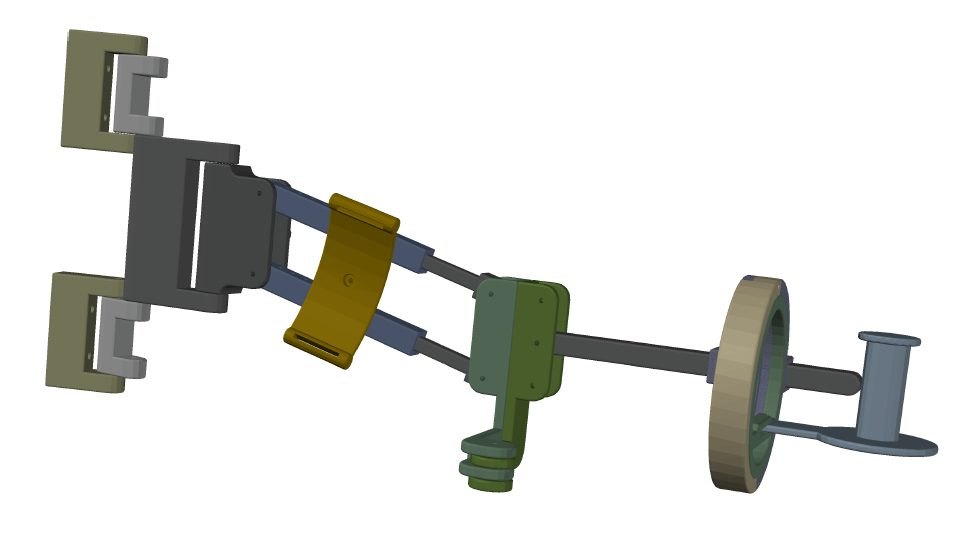
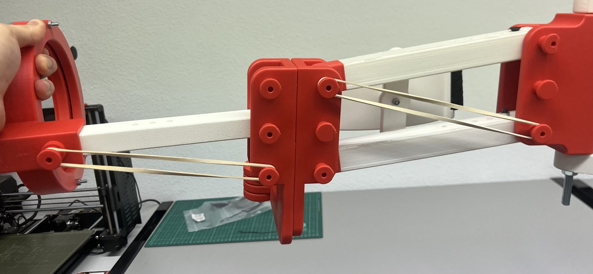
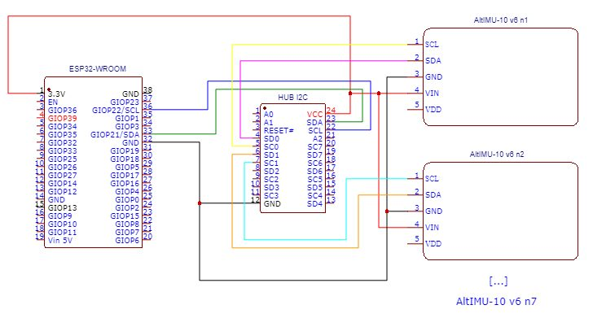
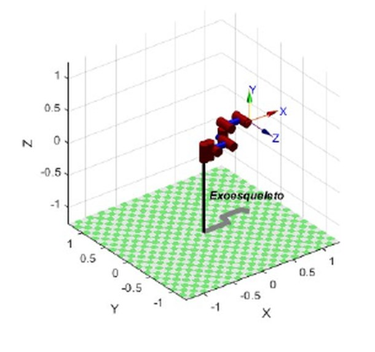
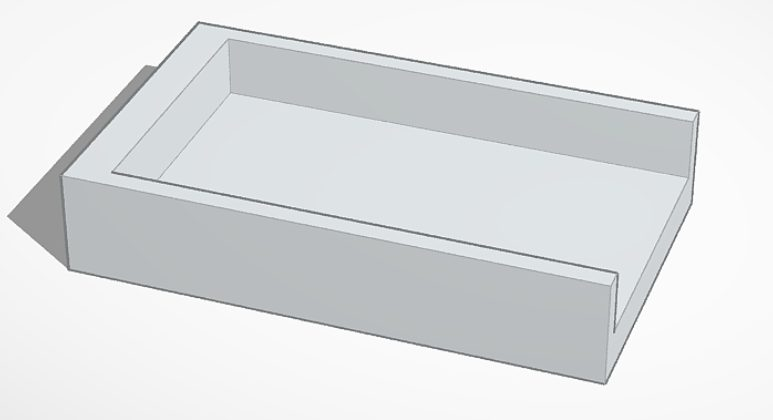
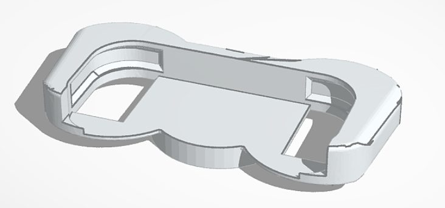

Bachelor's thesis · University of Alicante · HURO group · 2025Trabajo Fin de Grado · Universidad de Alicante · grupo HURO · 2025
Pediatric upper-limb exoskeleton for rehabilitation
Exoesqueleto pediátrico de miembro superior para rehabilitación
A passive, adjustable orthosis for children aged 7 to 17, designed and 3D-printed from scratch, sensorised to measure its own joint angles in real time, and connected to a virtual-reality game that makes rehabilitation more motivating.
Una órtesis pasiva y ajustable para niños de 7 a 17 años, diseñada e impresa en 3D desde cero, sensorizada para medir sus propios ángulos articulares en tiempo real y conectada a un juego de realidad virtual que hace la rehabilitación más motivadora.



What I built
Qué construí
- Mechanical design and printing. Parts printed in PLA, with adjustable links so one device fits a wide age range, plus custom mounts for the sensors and for a game controller.
- Sensing. Seven IMUs read over I²C through a TCA9548A multiplexer by an ESP32, with firmware written in C++.
- Joint angles. Accelerometer and gyroscope fused with a complementary filter, after an initial calibration that removes sensor offset.
- Kinematics. A Denavit-Hartenberg model of the device in MATLAB to visualise the arm and compute forward kinematics.
- Dynamics. A dynamic simulation in Autodesk Inventor to compute joint torques, as groundwork for future motorisation.
- Diseño mecánico e impresión. Piezas impresas en PLA, con eslabones ajustables para que un solo dispositivo sirva para un rango amplio de edades, y soportes propios para los sensores y para un mando de juego.
- Sensorización. Siete IMU leídas por I²C a través de un multiplexor TCA9548A desde una ESP32, con firmware escrito en C++.
- Ángulos articulares. Acelerómetro y giroscopio fusionados con un filtro complementario, tras una calibración inicial que corrige el offset de los sensores.
- Cinemática. Un modelo Denavit-Hartenberg del dispositivo en MATLAB para visualizar el brazo y calcular la cinemática directa.
- Dinámica. Una simulación dinámica en Autodesk Inventor para calcular los pares articulares, como base para una futura motorización.
System
Sistema
- IMU7 × Pololu AltIMU-10 v6
- ControllerControladorESP32 · C++ (Arduino)
- BusBusI²C · TCA9548A
- Sensor fusionFusión de sensorescomplementary filter + offset calibrationfiltro complementario + calibración de offset
- ModellingModeladoMATLAB · Denavit-Hartenberg
- SimulationSimulaciónAutodesk Inventor
- BuildFabricación3D-printed PLA, elastic bandsPLA impreso en 3D, bandas elásticas
Electronics and modelling
Electrónica y modelado




Integration and validation
Integración y validación
I worked with a Multimedia Engineering student whose thesis was a VR serious game for upper-limb rehabilitation. A game controller is mounted on the exoskeleton's end effector, so the user plays by moving the device, while my sensor system provides real movement data. The result is a working device, a sensor system that tracks its motion and a game that makes exercises more engaging.
Colaboré con un estudiante de Ingeniería Multimedia cuyo TFG era un juego serio de realidad virtual para la rehabilitación del miembro superior. Un mando de juego va montado en el extremo del exoesqueleto, de modo que el usuario juega moviendo el dispositivo, mientras mi sistema de sensores aporta datos reales de movimiento. El resultado es un dispositivo funcional, un sistema de sensores que sigue su movimiento y un juego que hace los ejercicios más atractivos.
The device was tested with two pediatric users, aged 7 and 17, under parental supervision, which confirmed the adjustable range. The sensor readings were fed into the MATLAB model to check that it reproduced the real motion.
El dispositivo se probó con dos usuarios pediátricos, de 7 y 17 años, bajo supervisión de sus padres, lo que confirmó el rango de ajuste. Las lecturas de los sensores se introdujeron en el modelo de MATLAB para comprobar que reproducía el movimiento real.
Next steps I identified
Siguientes pasos que identifiqué
- Stronger materials such as PETG or ABS.
- Wireless sensors to reduce cabling.
- A portable design without the fixed stand.
- Motorisation, based on the torque study.
- Clinical validation with patients.
- Materiales más resistentes, como PETG o ABS.
- Sensores inalámbricos para reducir el cableado.
- Un diseño portátil sin soporte fijo.
- Motorización, a partir del estudio de pares.
- Validación clínica con pacientes.
Read the full thesis (PDF, Spanish)Leer el TFG completo (PDF)